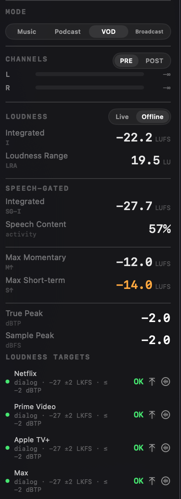

Every streaming-TV delivery spec quotes the same loudness number. Netflix, Prime Video, Apple TV+, Disney+, HBO Max: -27 LKFS, true peak under -2 dBTP. The number is easy to find and easy to hit. The part that's easy to miss is two words next to it in the spec - dialogue-gated.
-27 LKFS dialogue-gated means you measure the loudness of the speech, not the whole programme. A scene with a quiet conversation under a loud music bed is judged on the conversation. A trailer that runs thirty seconds of explosions and ten of voiceover is judged on the voiceover. The integrated loudness of the full mix - the number a loudness meter shows by default - is answering a different question than the one the delivery spec is asking.
How far apart the two numbers get
The integrated and the dialogue-gated readings diverge exactly when there is a lot of non-speech energy in the mix: music, effects, ambience. Here is one mix in Specula, read both ways at once.

Read the -22.2 on its own and you would reach for a limiter to pull the "too loud" mix down toward -27. That is backwards. The dialogue is already at -27.7, comfortably inside the window; the mix doesn't need taming, and taming it would drag the speech below the target's lower bound and break a file that currently passes. The integrated number isn't wrong - it is answering a different question - and acting on it here would turn a clean delivery into a failed one. That is the trap dialogue-gating exists to prevent, and it is invisible to any reading taken over the full programme.
Where the dialogue number comes from
Measuring the dialogue means knowing where the dialogue is. Specula runs a neural voice-activity detector - a bundled Silero model, running on-device - over every loaded file, labelling each 100 ms block as speech or not, and gates a parallel BS.1770 integrated measurement to the speech blocks. The result is the dialogue-gated number the streaming specs ask for, sitting directly beside the full-programme integrated reading so you can see both and the gap between them.
The detector is good, but no detector is infallible, and a sung line, a whispered aside, or a voice buried under a loud music bed is exactly where automatic classification can slip. When it does, the speech map is not fixed: Dialogue mode lets you correct which regions count as speech by hand, and the corrected map feeds straight back into the dialogue-gated reading and every target verdict that depends on it. The automatic pass gets you most of the way; the manual one is there for the files that need it. The SG toggle on the waveform shades the detected speech blocks so you can check the map against what you hear before trusting the number.
The same speech map does double duty elsewhere: it is what makes the audiobook noise floor measurable, by gating the measurement to the silence instead of the speech. Pointing it at the streamers' targets was largely a matter of comparing the speech-gated reading against the right numbers.
Four delivery modes, one panel
VOD is one of four modes in the Loudness Targets panel; together they cover 22 platforms and standards. The reason for a panel instead of four fixed badges is that each delivery world measures loudness differently, and the verdict has to match the spec rather than approximate it.
| Mode | Covers | Judged on |
|---|---|---|
| Music | Spotify, Apple Music, YouTube, Tidal, Amazon, Deezer, SoundCloud | Integrated, as a per-platform offset |
| Podcast | Apple Podcasts, Spotify, ACX audiobook | Dialogue-gated; ACX on RMS |
| VOD | Netflix, Prime Video, Apple TV+, Disney+, HBO Max | Dialogue-gated |
| Broadcast | EBU R128, ATSC A/85 (CALM), ARIB TR-B32, OP-59 | Integrated, except CALM (dialogue-gated) |
Music doesn't pass or fail; it tells you the offset. A master at -10 LUFS reads Spotify -4 dB, Apple Music -6 dB - the actual gain each service applies when it normalises you on playback. "Spotify will turn this down 4 dB" is something you can act on; "outside the Spotify range" tells you nothing about the size of the problem. The references behind those offsets are -14 LUFS for Spotify, YouTube, Tidal and SoundCloud, -16 for Apple Music, -15 for Deezer, with Amazon Music adding a -2 dBTP ceiling.
Podcast runs Apple Podcasts (-16 LKFS) and Spotify (-14 LKFS) as dialogue-gated penalty targets, and folds in ACX audiobook compliance with its RMS window and the -60 dB noise floor. VOD is the five streamers, all at -27 LKFS dialogue-gated, ±2 LU, peaks under -2 dBTP, hard pass or fail on the speech-gated reading. Broadcast is the EBU R128 family (-23 LUFS, ±0.5, with a ±1 live tolerance and a tighter short-form variant), plus ATSC A/85 and the CALM Act (-24 LKFS), ARIB TR-B32 for Japan and OP-59 for Australia.
Dialogue-gating isn't only a streaming thing
It is worth noticing which rows in that table are dialogue-gated: all five VOD platforms, and the CALM Act over on the broadcast side. The CALM Act - the US law that stopped TV adverts being louder than the programmes around them - is itself dialogue-gated, at -24 LKFS. The streamers didn't invent the idea; they adopted it. The principle is the same one in every case: judge perceived loudness on the voice, because the voice is what a viewer's attention tracks. Once you have seen the integrated and dialogue-gated numbers drift several dB apart on the same file, it is obvious why the spec is written that way.
The loudness math underneath all of it is ITU-R BS.1770-4: K-weighting, dual gating, 4x oversampled true-peak detection, validated against the EBU R128 test set. The dialogue gate is that same algorithm, run only over the blocks the detector marked as speech. Same standard, narrower window - which is precisely what the delivery spec asked for.
Specula is a desktop audio analyser for macOS: load a file and read every loudness, spectral and stereo number on it, with a four-mode Loudness Targets panel covering 22 platforms and standards. Intro price $49 through 31 July, then $99. Requires macOS 14 (Sonoma) or later. See the compliance guide for the full target list.